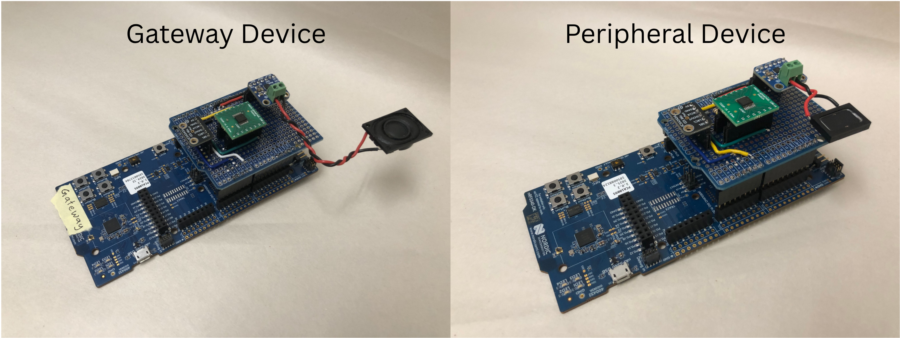
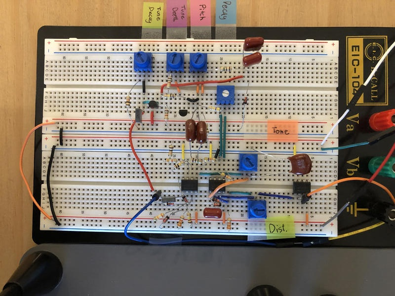

Electrical Engineering | Embedded Systems | Digital Design
Bridging Hardware & Software
breid62@my.bcit.ca | 604-401-8363
Burnaby, British Columbia, Canada
I am a recent graduate of the Electrical Engineering bachelor’s program at the British Columbia Institute of Technology (BCIT), where I developed a strong foundation in core engineering disciplines including circuit design, power systems, and process control. I graduated with a 92% GPA.
Through multi-term design projects, including my fourth-year capstone, I took on leadership roles in the development and integration of complex systems. These experiences strengthened my ability to manage technical scope, collaborate effectively, and deliver results in team-based environments.
As a Project Assistant at Houle Electric, I worked closely with project managers, engineers, and contractors to support real-world project execution and ensure alignment between system design and implementation.
My primary interests are in embedded systems, RTL design, and DSP. I enjoy working at the intersection of hardware and software to translate high-level concepts into practical, low-level implementations.
I am currently seeking opportunities in embedded systems, digital/RTL/FPGA/ASIC design, or design verification, and I remain open to roles across the broader electrical engineering domain.
For my fourth-year Capstone project at BCIT, my team developed firmware for a helmet-mounted wireless intercom enabling real-time communication between cyclists in groups of 2-4. The system is intended to address safety challenges caused by wind noise, distance, and the need for riders to turn or shout while riding. Our prototype was built on an Nordic Semiconductors nRF5340 Development Kit, with the firmware written in C using the nRF Connect SDK and Zephyr RTOS.
I took on the role of Team Lead for the project. As Team Lead, I assessed project goals, timelines, and resources, and executed workplans tailored to each team member’s strengths. I managed stakeholder communication with our project mentor and industry sponsor, tracked progress through bi-weekly reports and milestone reviews, and facilitated team meetings and task delegation. The project required quickly becoming proficient with an unfamiliar toolchain, including the nRF Connect SDK, Zephyr RTOS, and associated development tools. As the most experienced firmware developer on the team, I organized training sessions to bring members up to speed and improve overall effectiveness.
In addition to my leadership role, I was also responsible for designing and implementing the wireless networking architecture.

Similar products on the market commonly use cellular or Wi-Fi for networking, but these solutions require the user to connect the device to a cellphone. However, our industry sponsor, Herd Technologies, insisted that they wanted the design to work independently of a cellphone. The networking solution initially proposed in the sponsor’s project proposal was Bluetooth Mesh.
After evaluating Bluetooth Mesh, I determined it was unsuitable for low-latency audio streaming. Ultimately, Bluetooth LE Audio was selected due to its support for low-power, standalone audio streaming without Wi-Fi or cellular connectivity. But our design required many-to-many connectivity and most Bluetooth LE Audio applications and resources I found were for one-to-one or one-to-many connection topologies.
My solution was to design a custom star topology using the Bluetooth LE Audio protocol in Unicast (connection-based) streaming mode. Each device uses a push-to-talk button to indicate when it has voice audio data to send. A central “gateway” device receives audio data, or a 1-byte inactive audio flag, from each peripheral device. An active speaker selection algorithm is implemented at the central device to determine which user’s audio to output through the intercom. The active speaker’s incoming audio is buffered then audio routing logic is used to transmit the audio data to the listening peripheral devices. This design minimizes bandwidth usage and avoids crosstalk by ensuring only one active audio stream is transmitted at a time.
I chose the nRF5340 DK to implement our design because the hardware is designed specifically with low-energy, wireless devices in mind and the nRF Connect SDK development platform offers an excellent Bluetooth stack and Bluetooth LE Audio examples and sample applications. We started with the nRF5340 Audio application sample, which features a full Bluetooth stack implementation for a gateway device streaming bidirectional audio to one or two peripheral devices intended to be a wireless headset or pair of headphones. To implement our custom networking design, complete audio routing and active speaker selection modules were written from scratch, and several source files in the sample codebase were modified.
The final design reliably maintains wireless audio streaming connections between four devices at distances of approximately 18 m and can recover from single-device disconnections.
This a digital design project built during my electrical engineering degree. The design is a variable waveshape LFO generator implemented on an FPGA using SystemVerilog, structured as a modular design with components for SPI communication to an external DAC, waveform generation using lookup tables, clock generation, and user input handling via rotary encoders. I developed testbenches to verify individual modules and used simulation tools to debug functionality and validate design behavior.
Project Purpose:
This is a guitar effect pedal accessory that generates a low frequency oscillator (LFO) control voltage (CV) signal to control external guitar pedal parameters.
Example Use Case:
I have a guitar overdrive pedal that has a ¼’’ external expression input. This input is intended to be connected to an external foot pedal that allows the player to control the filter cutoff parameter with their foot as opposed to turning the “FILTER” knob on the pedal. Using the same principal as the foot pedal, an LFO signal can be applied to this input to create a dynamic effect by continually modulating the filter cutoff.
This is a 16 step sequencer programmed in C on a Raspberry Pi Pico 2 W microcontroller. The sequencer has four programmable tracks, each assigned to trigger MIDI drum sounds in a DAW such as Logic Pro X.
In the second year of the Electrical Engineering program at BCIT, we completed an automated robot car design project in groups of two.
The objective of the project was to design a completely autonomous car capable of navigating a course designed by the instructor, hitting each of the four wall-mounted targets with a projectile launched from a spring-loaded BB shooter, and parking in the designated finish area on the opposite side of the course.
This project was implemented on a Raspberry Pi 4 single-board computer running Linux OS, using object-oriented programming concepts in C++. The design utilized SSH for remote deployment, GPIO libraries for hardware interfacing, OpenCV for computer vision and GUI development, and socket programming for networked control.
Our group divided the project work into two categories: hardware and software. My partner handled the hardware, and I was responsible for the software.
The car accessed an overhead video stream of the course by communicating with a local server over a serial connection. It then used a top-mounted QR code to determine its position and navigate the course.
Our car completed the course in under 40 seconds, earning full marks for the assignment.
During my winter break from BCIT in December 2023, I built an analog kick drum synthesizer circuit on a breadboard using a schematic created by DIY electronics designer Moritz Klein.
I completed the project in an afternoon and found the process highly engaging. It was valuable to work through each step of the design, and I learned useful techniques in analog circuit design that I plan to apply in future projects.
